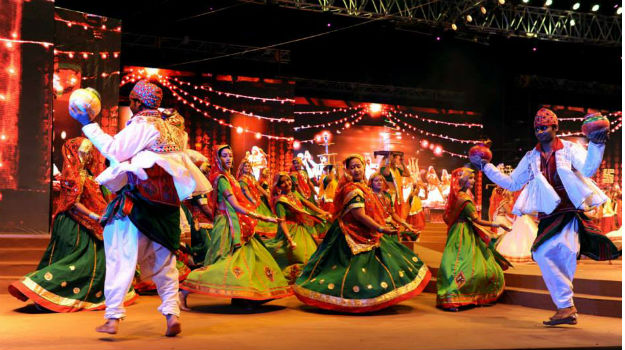
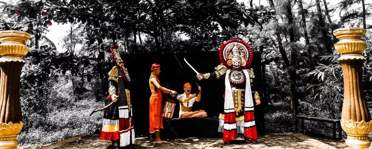
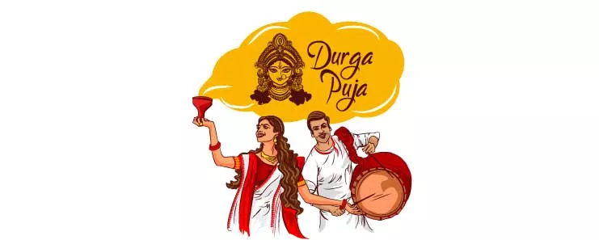
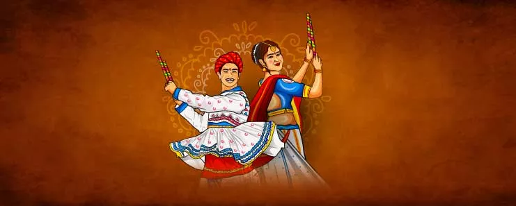

Navratri Celebration in Northern India
In North India, Navratri is celebrated as the victory of Lord Rama over the evil king Ravana. It culminates in the celebrations of the Ramlila which is enacted ceremoniously during Dussehra. The effigies of Ravana, Kumbhakarna, are burnt to celebrate the victory of good (Rama) over evil forces on the 'Vijaya Dashami' day. These nine days are filled with special pujas, yagnas, homas, fasting, meditations, silence, singing, and dancing honoring Mother Divine, her entire creation - all forms of life, all forms of art, music, and knowledge. She is worshipped as the savior of mankind from ignorance and all forms of evil.
North India Temple

Ma Vaishnodevi Temple

Maa Mansa Devi Temple
Navratri Celebration in Southern India
In Western India, particularly in the state of Gujarat, Navratri is celebrated with the famous Garba and Dandiya-Raas dance. Garba is a graceful form of dance, wherein women dance gracefully in circles around a pot containing a lamp. The word ‘Garba’ or ‘Garbha’ means womb, and in this context the lamp in the pot, symbolically represent life within a womb. Besides the Garba is the Dandiya dance, in which men and women participate in pairs with small, decorated bamboo sticks, called dandiyas in their hands. At the end of these dandiyas are tied tiny bells called ghungroos that make a jingling sound when the sticks hit one another. The dance has a complex rhythm. The dancers begin with a slow tempo, and go into frenzied movements, in such a manner that each person in a circle not only performs a solo dance with his own sticks, but also strikes his partner’s dandiyas in style!
south India Temple

Kanaka Durga Temple

Mandarthi Sree Durgaparameshwari Temple
Navratri Celebration in Eastern India
The last five days of Sharad Navratri is celebrated as Durga Puja in West Bengal and North East India. Devi Durga is shown with various weapons in her hand, riding on a lion. Lion signifies the dharma, the will power, while the weapons denote the focus and severity needed to destroy the negativity in our minds. Eighth day is traditionally Durgashtami. Exquisitely crafted and decorated life-size clay idols of the Goddess Durga depicting her slaying the demon Mahishasura are set up in temples and other places. These idols are then worshipped for five days and immersed in the river on the fifth day.
East india Temple
Kamakhya Devi Temple
Kalighat Temple
Navratri Celebration in Western India-
In Western India, particularly in the state of Gujarat, Navratri is celebrated with the famous Garba and Dandiya-Raas dance. Garba is a graceful form of dance, wherein women dance gracefully in circles around a pot containing a lamp. The word ‘Garba’ or ‘Garbha’ means womb, and in this context the lamp in the pot, symbolically represent life within a womb. Besides the Garba is the Dandiya dance, in which men and women participate in pairs with small, decorated bamboo sticks, called dandiyas in their hands. At the end of these dandiyas are tied tiny bells called ghungroos that make a jingling sound when the sticks hit one another. The dance has a complex rhythm. The dancers begin with a slow tempo, and go into frenzied movements, in such a manner that each person in a circle not only performs a solo dance with his own sticks, but also strikes his partner’s dandiyas in style!
Weast India Temple